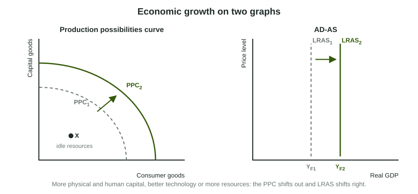

Most of this course is about the short run: recessions, inflationary gaps and the policies that fight them. Over decades, though, those ups and downs are small next to the long climb in what an economy can produce. Real GDP per person in the United States is about three and a half times what it was in 1960. This topic is about that climb: what economic growth is, where it comes from, and how to show it on two graphs you already know.
What growth is, and what it is not
Economic growth is a sustained rise in an economy's potential output, its capacity to produce at full employment, and with it a rise in real GDP per capita, the usual measure of the average standard of living. Three things look like growth but are not:
- A rise in nominal GDP that comes from higher prices. Growth is measured in real terms.
- A recovery from a recession. When idle workers and factories go back to work, output rises, but capacity has not changed: the economy moves from inside its PPC toward the curve.
- A rise in total real GDP that only keeps pace with population. If output and population both grow 10 percent, output per person is unchanged.
Worked example: growth per person. An invented country's real GDP rises from 200 to 210 billion base-year dollars while its population stays at 10 million.
- Growth of real GDP. percent.
- Real GDP per capita. Year 1: thousand dollars. Year 2: thousand dollars.
- Growth of real GDP per capita. percent. With a steady population the two rates match; if the population had grown 5 percent too, output per person would not have grown at all.
Growth on two graphs

On the PPC, growth is the whole curve shifting out: the economy can produce more of both goods. A point inside the curve, like X, shows idle resources; moving from X to the curve is recovery. On the AD-AS graph, growth is LRAS shifting right, from full-employment output YF1 to YF2. Both curves show the same thing, the economy's capacity, so whatever shifts one shifts the other. A rise in AD alone moves neither.
Where growth comes from
Output per worker, productivity, is the key. The share of people who work cannot rise forever, so lasting gains in living standards come from each worker producing more. Productivity rises with:
| Source | What it is | Example |
|---|---|---|
| Physical capital | Equipment, buildings and machines workers use | A farm buys a harvester that does the work of ten people |
| Human capital | Skills, knowledge, training and health | A nurse completes training for more complex procedures |
| Technology | Better ideas and methods for producing | A new process makes steel with less energy |
| Natural resources and labor | More or better land, minerals and workers | A new mineral deposit is found; the labor force grows |
Physical capital comes from investment, which is why the loanable funds market matters for growth: saving supplies the funds that firms borrow to build the capital stock.
Today's choice, tomorrow's PPC
Put capital goods on one axis of the PPC and consumer goods on the other. An economy that chooses a point with more capital goods gives up some consumption today, its opportunity cost, but adds more to its capital stock, so its PPC shifts out further in the future. An economy that chooses mostly consumer goods enjoys more now and grows more slowly. Neither choice is wrong; it is a trade-off between the present and the future.
Slip to avoid: calling a move from inside the PPC to the curve "economic growth", or showing growth by shifting AD. Growth is a shift of the PPC and of LRAS.
Growth and the business cycle
Real GDP does not grow smoothly. It rises above potential in expansions and falls below it in recessions, the business cycle. Growth is the upward trend underneath: potential output rising year after year. Stabilization policy aims to keep actual output close to potential; growth is about raising potential itself, and the next topic looks at the policies that try to do that.